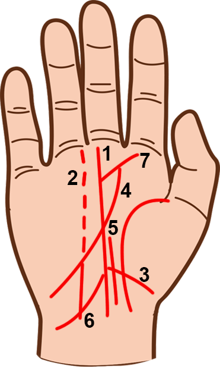
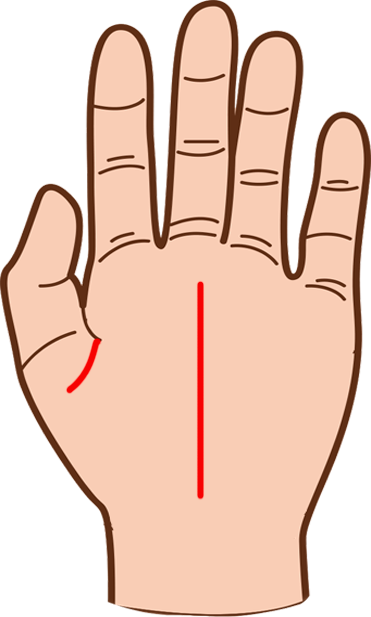

Có thể biết được sự nghiệp, công việc và mức độ tham vọng của một người nào đó qua vị trí của
đường định mệnh. Đường này liên quan đến sự nghiệp, công việc, tham vọng và định hướng của cuộc
đời của một người nào đó ngay từ thời thơ ấu. Nó cũng chỉ ra niềm tin và những khả năng của họ.
Đường này bắt đầu từ phía cuối lòng bàn tay, gần cổ tay và chạy theo lòng bàn tay lên phần gốc
các ngón tay. Nó thường nằm ở chỗ Thái Dương và kết thúc ở các vị trí khác nhau nơi phía dưới
ngón trỏ và ngón giữa. 1. Đường định mệnh chạy thẳng giữa lòng bàn tay Đường định mệnh thẳng
đứng, cho thấy một người có ý thức rõ ràng về hướng đi và mục đích trong cuộc đời, với một sự
nghiệp được khởi đầu từ sớm. Nó cũng có thể cho thấy rằng họ sẽ chuyển giao lại công việc làm
ăn, kinh doanh cho các thành viên trong gia đình.

Có thể nhận thấy rõ ý thức cao độ của ai đó về mục tiêu trong cuộc đời khi đường định mệnh đậm
nét và liền mạch, chạy thẳng lên giữa lòng bàn tay 2. Đường định mệnh bị đứt đoạn Khi đường định
mệnh có nhiều chỗ đứt đoạn, nó cho thấy những đổi thay trong cuộc sống và sự nghiệp. Những người
này quả thật chưa bao giờ dồn hết tâm trí vào công việc, nên họ chỉ đạt những thành công không
đáng kể. 3. Đường định mệnh xuất phát bằng việc đổi chiều hoặc chạm vào đường sinh đạo Đối với
người có đường định mệnh như thế này thì việc quan tâm đến gia đình là rất quan trọng đối với
họ, ngay từ khi còn ít tuổi. Trước khi đến tuổi trung niên họ sẽ gánh những trọng trách gia đình
hoặc đôi khi còn tham gia vào công việc kinh doanh của gia đình. Họ có xu hướng không thích đi
du lịch và muốn ở nhà với người thân khi đã bước sang nửa kia của cuộc đời. 4. Đường định mệnh
bắt đầu từ gò Thái Âm lên trên Đường định mệnh bắt đầu từ mặt lòng bàn tay đối diện với ngón
cái, nó thường cho thấy đây là một người độc lập; sẽ thoát khỏi truyền thống gia đình. Nó cũng
chỉ ra rằng đây là người có thể ra nước ngoài làm việc. 5. Đường cản trở Nếu đường riêng biệt
nay chạy thẳng lên, song song với đường định mệnh một đoạn ngắn, nó cho thấy những áp lực và
những trách nhiệm từ bên ngoài. Những áp lực và trách nhiệm có thể làm ảnh hưởng đến sự thăng
tiến, do vậy tham vọng của người này dễ bị cản trở. 6. Các đường tác động Các đường này xuất
phát từ đường định mệnh. Nếu chúng hướng lên trên, sẽ chỉ ra rằng người này đang chịu những ảnh
hưởng tích cực từ người khác. Nếu hướng xuống dưới, sẽ cho thấy người này đang bị ảnh hưởng tiêu
cực của người khác. 7. Đường định mệnh hướng lên trên, về phía gò Mộc Tinh Đường này cho thấy
đây là người có quyết tâm rất lớn và có khả năng làm lãnh đạo. Ý chí quyết thắng của bản năng
thứ hai của họ. 8. Đường định mệnh sinh đôi Đường định mệnh sinh đôi này cho thấy người này có
hai sự nghiệp. Họ có thể điều hành hai công ty, hoặc tham gia làm hai công việc một lúc.